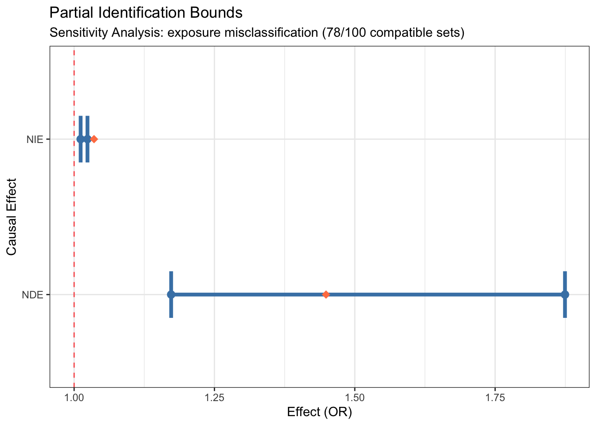
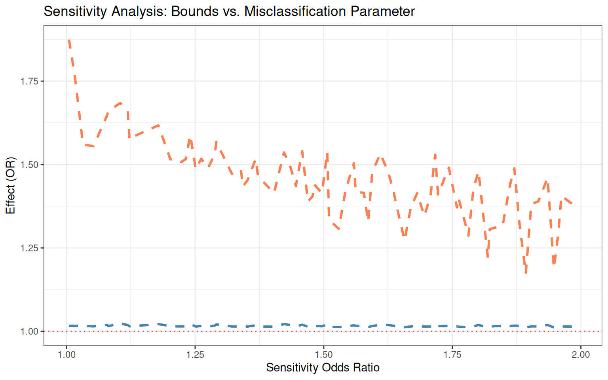
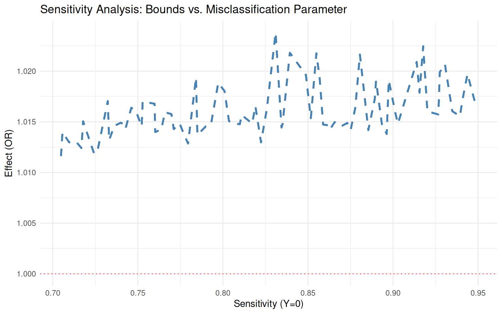
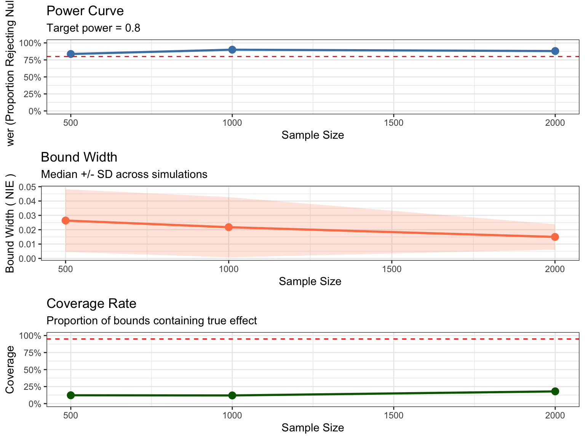
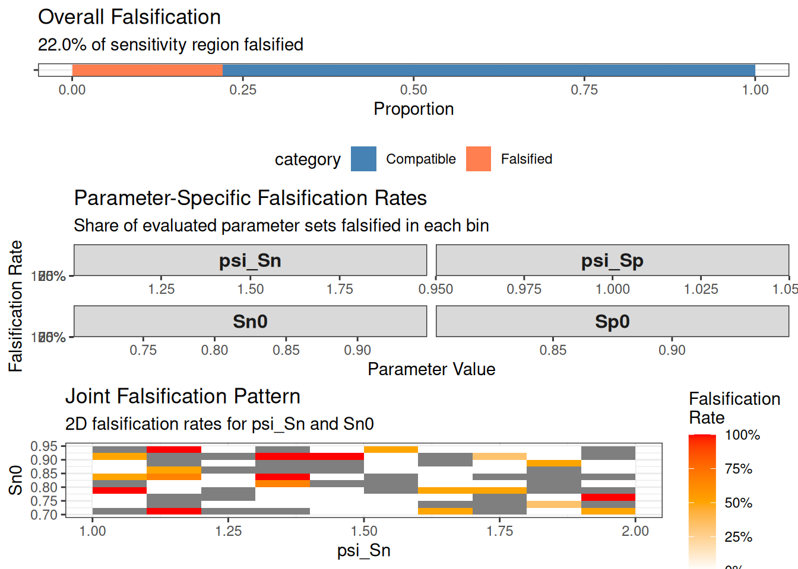

# Install from GitHub
devtools::install_github("data-wise/medrobust")Introduction
The medrobust package provides tools for conducting sensitivity analysis for causal mediation effects when the exposure or mediator is measured with differential misclassification. This is particularly important when:
- The outcome may influence recall or reporting of the exposure/mediator (recall bias)
- Measurement error depends on other variables in the causal system
- Traditional measurement error correction methods requiring validation data are infeasible
- Gold-standard measurements are unavailable or too costly to obtain
What is Differential Misclassification?
Differential misclassification occurs when the probability of mismeasurement depends on other variables. For example:
- Recall bias: Participants with the outcome (e.g., disease) may remember exposures differently than those without
- Outcome-dependent measurement error: The outcome affects how the mediator or exposure is measured
- Non-random measurement error: Sensitivity and specificity vary across strata
This contrasts with non-differential misclassification, where measurement error is independent of other variables.
The Problem
Standard mediation analysis methods assume perfect measurement. When differential misclassification is present:
- Point estimates of mediation effects are biased
- Confidence intervals have incorrect coverage
- Causal conclusions may be invalid
Traditional measurement error correction requires:
- Validation data with gold-standard measurements
- Strong parametric assumptions about error structure
- These are often unavailable in practice
The Solution: Partial Identification
Instead of point estimation under strong assumptions, medrobust uses partial identification to:
- Derive bounds on causal effects that remain valid under differential misclassification
- Test whether observed data are compatible with hypothesized misclassification parameters
- Falsify implausible parameter combinations using testable implications
- Provide honest uncertainty quantification via bootstrap confidence intervals
Installation
library(medrobust)
library(parallel)
n_cores <- detectCores() - 2 # Leave two cores freeKey Concepts
Natural Direct and Indirect Effects
In causal mediation analysis, we decompose the total effect of exposure on outcome into:
- Natural Direct Effect (NDE): Effect of on not mediated through
- Natural Indirect Effect (NIE): Effect of on mediated through
On the odds ratio scale:
Misclassification Parameters
The package uses four key parameters to characterize differential misclassification:
Baseline parameters (when outcome ):
-
sn0: Sensitivity (probability of correctly classifying a true positive) -
sp0: Specificity (probability of correctly classifying a true negative)
Differential parameters (how they change when ):
-
psi_sn: Sensitivity odds ratio comparing to -
psi_sp: Specificity odds ratio comparing to
Special cases:
-
Non-differential misclassification:
psi_sn = 1.0andpsi_sp = 1.0 -
Perfect measurement:
sn0 = 1.0andsp0 = 1.0
Basic Workflow
The typical analysis follows these steps:
- Simulate or load data
- Define sensitivity region (plausible range of misclassification parameters)
- Compute bounds for NDE and NIE
- Examine compatibility with hypothesized parameters
- Visualize results using plot() and sensitivity_plot()
- Perform inference via bootstrap
- Use generic methods (summary, print, as.data.frame, as.list)
- Power analysis (optional: plan future studies)
Example 1: Exposure Misclassification
Let’s analyze a scenario where the exposure is differentially misclassified.
Step 1: Generate Synthetic Data
# Set parameters for data generation
set.seed(123)
# True causal parameters
true_params <- list(
beta_AM = log(1.5), # Effect of A on M (OR = 1.5)
theta_AY = log(1.3), # Direct effect of A on Y (OR = 1.3)
theta_MY = log(1.4), # Effect of M on Y (OR = 1.4)
p_A = 0.4 # Marginal probability of A
)
# Misclassification parameters (differential)
dm_params <- list(
sn0 = 0.85, # Sensitivity when Y=0
sp0 = 0.90, # Specificity when Y=0
psi_sn = 1.5, # Sensitivity increases when Y=1 (recall bias)
psi_sp = 1.0 # Specificity unchanged
)
# Generate data with exposure misclassification
sim_data <- simulate_dm_data(
n = 1000,
true_params = true_params,
dm_params = dm_params,
misclass_type = "exposure",
confounders = 2,
seed = 123
)
# View structure
print(sim_data)
======================================================================
SIMULATED DATA WITH DIFFERENTIAL MISCLASSIFICATION
======================================================================
Sample size: n = 1000
Misclassified variable: Exposure
----------------------------------------------------------------------
MISCLASSIFICATION PARAMETERS
----------------------------------------------------------------------
Specified:
Sn0: 0.850
Sp0: 0.900
psi_Sn: 1.500
psi_Sp: 1.000
Empirical (from simulated data):
Sn0: 0.835
Sp0: 0.896
Sn1: 0.876
Sp1: 0.899
Overall misclassification rate: 12.9%
----------------------------------------------------------------------
TRUE CAUSAL EFFECTS
----------------------------------------------------------------------
Odds Ratio Scale:
NIE: 1.028
NDE: 1.296
TCE: 1.333
PM: 0.110
Risk Ratio Scale:
NIE: 1.022
NDE: 1.235
TCE: 1.262
Risk Difference Scale:
NIE: 0.005
NDE: 0.039
TCE: 0.044
----------------------------------------------------------------------
DATA PREVIEW
----------------------------------------------------------------------
Observed data (first 6 rows):
C1 C2 M Y A_star
1 0 0 0 0 0
2 1 1 1 1 0
3 0 0 0 0 0
4 1 1 1 1 1
5 1 1 0 0 1
6 0 0 0 0 1
True data (first 6 rows):
C1 C2 A M Y
1 0 0 0 0 0
2 1 1 1 1 1
3 0 0 0 0 0
4 1 1 1 1 1
5 1 1 1 0 0
6 0 0 1 0 0
======================================================================
Use x@observed for analysis with bound_ne()
Use x@true_effects to check if true effects are in bounds
======================================================================
Class of sim_data: medrobust::simulated_dm_data S7_object The simulated data object is an S7 object that contains:
-
observed: The data we actually observe (with misclassified exposure) -
truth: The true underlying data (for validation purposes) -
true_effects: The true causal effects we’re trying to estimate -
generation_params: Parameters used to generate the data
# Access the observed data using @ for S7 properties
head(sim_data@observed)Step 2: Define Sensitivity Region
We specify plausible ranges for the misclassification parameters:
# Define sensitivity region
sens_region <- sensitivity_region(
sn0_range = c(0.70, 0.95), # Sensitivity ranges from 70% to 95%
sp0_range = c(0.80, 0.95), # Specificity ranges from 80% to 95%
psi_sn_range = c(1.0, 2.0), # Sensitivity OR from 1.0 to 2.0
psi_sp_range = c(1.0, 1.0) # No differential specificity
)
print(sens_region)
Sensitivity Region (Theta_psi):
----------------------------------------
Sn0: [0.700, 0.950]
Sp0: [0.800, 0.950]
psi_Sn: [1.000, 2.000]
psi_Sp: [1.000, 1.000]
---------------------------------------- Step 3: Compute Bounds
# Compute bounds over the sensitivity region
#
# PERFORMANCE NOTE:
# - n_grid = 10 creates 10^4 = 10,000 parameter combinations to evaluate
# - grid_method = "lhs" (Latin Hypercube Sampling) reduces evaluations significantly
# - For faster computation, enable parallel processing (see below)
# - For production analyses, use n_grid = 50 or higher for better resolution
#
# For CRAN vignette, we disable parallel processing
bounds <- bound_ne(
data = sim_data@observed,
exposure = "A_star", # Misclassified exposure
mediator = "M",
outcome = "Y",
confounders = c("C1", "C2"),
misclassified_variable = "exposure",
sensitivity_region = sens_region,
n_grid = 10, # Grid resolution (use 50+ for production)
effect_scale = "OR",
parallel = FALSE, # Set to TRUE with n_cores for faster processing in production
verbose = FALSE,
grid_method = "lhs" # (default) Latin Hypercube Sampling for efficiency
)
# View results
print(bounds)
======================================================================
PARTIAL IDENTIFICATION BOUNDS
======================================================================
Effect Scale: OR
Misclassified Variable: exposure
----------------------------------------------------------------------
NATURAL INDIRECT EFFECT (NIE)
----------------------------------------------------------------------
Lower Bound: 1.0116
Upper Bound: 1.0238
Width: 0.0122
----------------------------------------------------------------------
NATURAL DIRECT EFFECT (NDE)
----------------------------------------------------------------------
Lower Bound: 1.1729
Upper Bound: 1.8744
Width: 0.7016
----------------------------------------------------------------------
SENSITIVITY ANALYSIS
----------------------------------------------------------------------
Parameter sets evaluated: 100
Compatible sets: 78 (78.0%)
Falsified sets: 22 (22.0%)
======================================================================
Use summary() for detailed diagnostics
====================================================================== The output shows:
- Bounds on NIE and NDE: The range of plausible causal effect estimates
- Width of bounds: How much uncertainty remains
- Sensitivity analysis summary: How many parameter sets are compatible vs. falsified
# Get more detailed summary
summary(bounds)
======================================================================
PARTIAL IDENTIFICATION BOUNDS
======================================================================
Effect Scale: OR
Misclassified Variable: exposure
----------------------------------------------------------------------
NATURAL INDIRECT EFFECT (NIE)
----------------------------------------------------------------------
Lower Bound: 1.0116
Upper Bound: 1.0238
Width: 0.0122
----------------------------------------------------------------------
NATURAL DIRECT EFFECT (NDE)
----------------------------------------------------------------------
Lower Bound: 1.1729
Upper Bound: 1.8744
Width: 0.7016
----------------------------------------------------------------------
SENSITIVITY ANALYSIS
----------------------------------------------------------------------
Parameter sets evaluated: 100
Compatible sets: 78 (78.0%)
Falsified sets: 22 (22.0%)
======================================================================
Use summary() for detailed diagnostics
======================================================================
======================================================================
DETAILED SUMMARY
======================================================================
Sensitivity Region:
Sn0: [0.700, 0.950]
Sp0: [0.800, 0.950]
psi_Sn: [1.000, 2.000]
psi_Sp: [1.000, 1.000]
Naive Estimates (no measurement error correction):
Data Summary:
Sample size: 1000
Compatible Parameter Sets (first 5):
sn0 sp0 psi_sn psi_sp NIE NDE
1 0.9028948 0.9064690 1.791070 1 1.014813 1.428186
2 0.7598667 0.8393076 1.880388 1 1.016780 1.325090
3 0.7427937 0.9405130 1.275196 1 1.014344 1.489662
5 0.8350973 0.9280376 1.223051 1 1.014778 1.507371
7 0.7522601 0.8600748 1.822771 1 1.014543 1.306651Step 4: Visualize Results
# Use the plot() method to visualize bounds
plot(bounds)
The plot() method creates a clear visualization showing the bounds for NIE and NDE as error bars.
This plot shows:
- Error bars: The range of bounds for NIE and NDE
- Points: Lower and upper bounds for each effect
- Dashed red line: Null hypothesis value (OR = 1)
- Subtitle: Number of compatible vs. evaluated parameter sets
Step 5: Test Specific Hypotheses
We can test whether specific misclassification parameters are compatible with the data:
# Test specific misclassification parameters
# psi must contain all four parameters: sn0, sp0, psi_sn, psi_sp
compatibility <- check_compatibility(
data = sim_data@observed,
exposure = "A_star",
mediator = "M",
outcome = "Y",
confounders = c("C1", "C2"),
misclassified_variable = "exposure",
psi = list(
sn0 = 0.85, # Baseline sensitivity
sp0 = 0.90, # Baseline specificity
psi_sn = 1.5, # Differential sensitivity (OR)
psi_sp = 1.0 # Non-differential specificity
)
)
print(compatibility)
======================================================================
COMPATIBILITY TEST
======================================================================
Tested Parameters:
Sn0: 0.850
Sp0: 0.900
psi_Sn: 1.500
psi_Sp: 1.000
-> Sn1: 0.895
-> Sp1: 0.900
----------------------------------------------------------------------
RESULT: Compatible [PASS]
----------------------------------------------------------------------
The specified misclassification parameters are consistent with
the observed data. All testable implications are satisfied.
Constraints satisfied: 64 / 64
Implied true causal parameters have been successfully solved.
Use summary() to see detailed results.
====================================================================== Step 6: Bootstrap Inference
For inference, we can compute bootstrap confidence intervals:
# This takes longer, so we use fewer bootstrap replications for the vignette
bounds_with_ci <- bound_ne(
data = sim_data@observed,
exposure = "A_star",
mediator = "M",
outcome = "Y",
confounders = c("C1", "C2"),
misclassified_variable = "exposure",
sensitivity_region = sens_region,
n_grid = 10,
bootstrap = TRUE,
bootstrap_reps = 100, # Use 1000+ for production
parallel = FALSE, # Set to FALSE for CRAN vignette check
confidence_level = 0.95,
verbose = TRUE,
grid_method = "lhs" # (default) Latin Hypercube Sampling for efficiency
)Validating inputs...
Preparing data...
Computing bounds for exposure misclassification...
Grid resolution: 10 points per dimension
Total parameter sets to evaluate: 10000
Pre-computing observed probabilities...
=== Latin Hypercube Sampling ===
Samples: 100
|
| | 0%
|
|==== | 5%
|
|======= | 10%
|
|========== | 15%
|
|============== | 20%
|
|================== | 25%
|
|===================== | 30%
|
|======================== | 35%
|
|============================ | 40%
|
|================================ | 45%
|
|=================================== | 50%
|
|====================================== | 55%
|
|========================================== | 60%
|
|============================================== | 65%
|
|================================================= | 70%
|
|==================================================== | 75%
|
|======================================================== | 80%
|
|============================================================ | 85%
|
|=============================================================== | 90%
|
|================================================================== | 95%
|
|======================================================================| 100%
Compatible: 78/100 (78.0%)
Computing bootstrap confidence intervals...
Bootstrap Progress:
|
| | 0%
|
|= | 2%
|
|=== | 4%
|
|==== | 6%
|
|====== | 8%
|
|======= | 10%
|
|======== | 12%
|
|========== | 14%
|
|=========== | 16%
|
|============= | 18%
|
|============== | 20%
|
|=============== | 22%
|
|================= | 24%
|
|================== | 26%
|
|==================== | 28%
|
|===================== | 30%
|
|====================== | 32%
|
|======================== | 34%
|
|========================= | 36%
|
|=========================== | 38%
|
|============================ | 40%
|
|============================= | 42%
|
|=============================== | 44%
|
|================================ | 46%
|
|================================== | 48%
|
|=================================== | 50%
|
|==================================== | 52%
|
|====================================== | 54%
|
|======================================= | 56%
|
|========================================= | 58%
|
|========================================== | 60%
|
|=========================================== | 62%
|
|============================================= | 64%
|
|============================================== | 66%
|
|================================================ | 68%
|
|================================================= | 70%
|
|================================================== | 72%
|
|==================================================== | 74%
|
|===================================================== | 76%
|
|======================================================= | 78%
|
|======================================================== | 80%
|
|========================================================= | 82%
|
|=========================================================== | 84%
|
|============================================================ | 86%
|
|============================================================== | 88%
|
|=============================================================== | 90%
|
|================================================================ | 92%
|
|================================================================== | 94%
|
|=================================================================== | 96%
|
|===================================================================== | 98%
|
|======================================================================| 100%
------------------------------------------------------------
Bootstrap Results (100 replicates, 100 successful, 0 failed)
------------------------------------------------------------
NIE Lower Bound 95% CI: [1.014, 1.014]
NIE Upper Bound 95% CI: [1.028, 1.028]
NDE Lower Bound 95% CI: [1.149, 1.149]
NDE Upper Bound 95% CI: [1.651, 1.651]
------------------------------------------------------------
============================================================
COMPUTATION COMPLETE
============================================================
Time elapsed: 58.71 seconds
Compatible parameter sets: 78 / 100 (78.0%)
NIE Bounds (OR scale): [1.012, 1.024]
NDE Bounds (OR scale): [1.173, 1.874]
============================================================
print(bounds_with_ci)
======================================================================
PARTIAL IDENTIFICATION BOUNDS
======================================================================
Effect Scale: OR
Misclassified Variable: exposure
----------------------------------------------------------------------
NATURAL INDIRECT EFFECT (NIE)
----------------------------------------------------------------------
Lower Bound: 1.0116
Upper Bound: 1.0238
Width: 0.0122
----------------------------------------------------------------------
NATURAL DIRECT EFFECT (NDE)
----------------------------------------------------------------------
Lower Bound: 1.1729
Upper Bound: 1.8744
Width: 0.7016
----------------------------------------------------------------------
SENSITIVITY ANALYSIS
----------------------------------------------------------------------
Parameter sets evaluated: 100
Compatible sets: 78 (78.0%)
Falsified sets: 22 (22.0%)
----------------------------------------------------------------------
BOOTSTRAP CONFIDENCE INTERVALS
----------------------------------------------------------------------
Method: percentile
Replications: 100
Confidence Level: 95.0%
NIE Lower: [1.0138, 1.0138]
NIE Upper: [1.0277, 1.0277]
NDE Lower: [1.1494, 1.1494]
NDE Upper: [1.6513, 1.6513]
======================================================================
Use summary() for detailed diagnostics
====================================================================== Step 7: Using Generic Methods
The package provides standard S7 generic methods for all result objects:
# Summary method provides detailed statistics
summary(bounds)
======================================================================
PARTIAL IDENTIFICATION BOUNDS
======================================================================
Effect Scale: OR
Misclassified Variable: exposure
----------------------------------------------------------------------
NATURAL INDIRECT EFFECT (NIE)
----------------------------------------------------------------------
Lower Bound: 1.0116
Upper Bound: 1.0238
Width: 0.0122
----------------------------------------------------------------------
NATURAL DIRECT EFFECT (NDE)
----------------------------------------------------------------------
Lower Bound: 1.1729
Upper Bound: 1.8744
Width: 0.7016
----------------------------------------------------------------------
SENSITIVITY ANALYSIS
----------------------------------------------------------------------
Parameter sets evaluated: 100
Compatible sets: 78 (78.0%)
Falsified sets: 22 (22.0%)
======================================================================
Use summary() for detailed diagnostics
======================================================================
======================================================================
DETAILED SUMMARY
======================================================================
Sensitivity Region:
Sn0: [0.700, 0.950]
Sp0: [0.800, 0.950]
psi_Sn: [1.000, 2.000]
psi_Sp: [1.000, 1.000]
Naive Estimates (no measurement error correction):
Data Summary:
Sample size: 1000
Compatible Parameter Sets (first 5):
sn0 sp0 psi_sn psi_sp NIE NDE
1 0.9028948 0.9064690 1.791070 1 1.014813 1.428186
2 0.7598667 0.8393076 1.880388 1 1.016780 1.325090
3 0.7427937 0.9405130 1.275196 1 1.014344 1.489662
5 0.8350973 0.9280376 1.223051 1 1.014778 1.507371
7 0.7522601 0.8600748 1.822771 1 1.014543 1.306651
# Convert to data frame for further analysis
bounds_df <- as.data.frame(bounds)
head(bounds_df) [1] "NIE_lower" "NIE_upper" "NDE_lower"
[4] "NDE_upper" "effect_scale" "misclassified_variable"
[7] "sensitivity_region" "compatible_sets" "n_compatible"
[10] "n_evaluated" "naive_estimates"
# Plot method for visualization
plot(bounds)
Step 8: Sensitivity Plots
Create customized sensitivity plots to visualize how bounds vary across different misclassification parameters:
# Plot bounds as a function of sensitivity odds ratio
sensitivity_plot(
bounds,
param = "psi_sn",
effect = "both",
show_naive = TRUE,
show_null = TRUE
)
# Plot bounds as a function of baseline sensitivity
sensitivity_plot(bounds, param = "sn0", effect = "NIE", theme = "minimal")
These plots show:
- Ribbons: Range of bounds across all compatible parameter sets for each parameter value
- Dashed lines: Upper and lower bounds
- Horizontal lines: Naive estimates (assuming no misclassification) and null values
- How bounds vary: As misclassification parameters change
Power Analysis
Power analysis helps determine the sample size needed to detect mediation effects despite measurement error.
Planning a Study
# Conduct power analysis
power_result <- power_analysis(
true_params = list(
beta_AM = log(1.5), # A → M effect
theta_AY = log(1.3), # A → Y direct effect
theta_MY = log(1.4) # M → Y effect
),
dm_params = list(
sn0 = 0.85,
sp0 = 0.90,
psi_sn = 1.5,
psi_sp = 1.0
),
sensitivity_region = sens_region,
misclass_type = "exposure",
sample_sizes = c(500, 1000, 2000),
n_sim = 50, # Use 500+ for production
n_grid = 10,
parallel = FALSE,
verbose = FALSE
)
# View results
print(power_result)
======================================================================
POWER ANALYSIS RESULTS
======================================================================
Effect: NIE
True effect value: 1.027
Misclassified variable: Exposure
----------------------------------------------------------------------
POWER CURVE
----------------------------------------------------------------------
n power coverage mean_width median_width sd_width mean_lower
500 0.8367347 0.122449 0.02874859 0.02641270 0.021811057 1.009165
1000 0.9000000 0.120000 0.02649267 0.02176752 0.020962434 1.019624
2000 0.8800000 0.180000 0.01637269 0.01498081 0.008830039 1.021415
mean_upper
1.037914
1.046116
1.037788
----------------------------------------------------------------------
RECOMMENDATIONS
----------------------------------------------------------------------
To achieve power >= 0.8 :
Recommended sample size: n = 500
======================================================================
Use plot() to visualize power and width curves
====================================================================== Understanding Power Results
# Detailed summary
summary(power_result)
======================================================================
POWER ANALYSIS RESULTS
======================================================================
Effect: NIE
True effect value: 1.027
Misclassified variable: Exposure
----------------------------------------------------------------------
POWER CURVE
----------------------------------------------------------------------
n power coverage mean_width median_width sd_width mean_lower
500 0.8367347 0.122449 0.02874859 0.02641270 0.021811057 1.009165
1000 0.9000000 0.120000 0.02649267 0.02176752 0.020962434 1.019624
2000 0.8800000 0.180000 0.01637269 0.01498081 0.008830039 1.021415
mean_upper
1.037914
1.046116
1.037788
----------------------------------------------------------------------
RECOMMENDATIONS
----------------------------------------------------------------------
To achieve power >= 0.8 :
Recommended sample size: n = 500
======================================================================
Use plot() to visualize power and width curves
======================================================================
Detailed Power Curve Statistics:
----------------------------------------------------------------------
n power_pct coverage_pct median_width mean_lower mean_upper
1 500 83.7% 12.2% 0.02641270 1.009165 1.037914
2 1000 90% 12% 0.02176752 1.019624 1.046116
3 2000 88% 18% 0.01498081 1.021415 1.037788
# Convert to data frame for custom analysis
power_df <- as.data.frame(power_result)
print(power_df) n power coverage mean_width median_width sd_width mean_lower
1 500 0.8367347 0.122449 0.02874859 0.02641270 0.021811057 1.009165
2 1000 0.9000000 0.120000 0.02649267 0.02176752 0.020962434 1.019624
3 2000 0.8800000 0.180000 0.01637269 0.01498081 0.008830039 1.021415
mean_upper
1 1.037914
2 1.046116
3 1.037788Visualizing Power Curves
# Plot power curves
plot(power_result)TableGrob (3 x 1) "arrange": 3 grobs
z cells name grob
1 1 (1-1,1-1) arrange gtable[layout]
2 2 (2-2,1-1) arrange gtable[layout]
3 3 (3-3,1-1) arrange gtable[layout]
The power plot shows:
- Power curves: Probability of detecting effects at different sample sizes
- Target power line: Common threshold at 0.80 (80% power)
- Separate curves: For NIE and NDE effects
- Planning insight: Sample size needed to achieve desired power
Interpreting Power Analysis Results
The power_analysis() function computes:
- Power: Probability that confidence intervals exclude the null value
- Coverage: Actual coverage probability of confidence intervals
- Bias: Average difference between estimates and true values
- MSE: Mean squared error of estimates
Example interpretation:
If power = 0.85 for NIE at n = 1000: - With 1000 participants, you have 85% probability of detecting the mediation effect - This assumes the specified effect sizes and misclassification parameters - You can be confident the study is adequately powered
Example 2: Mediator Misclassification
Now let’s consider mediator misclassification instead:
# Generate data with mediator misclassification
sim_data_med <- simulate_dm_data(
n = 1000,
true_params = true_params,
dm_params = dm_params,
misclass_type = "mediator", # Mediator is misclassified
confounders = 1,
seed = 456
)
# Define sensitivity region for mediator misclassification
sens_region_med <- sensitivity_region(
sn0_range = c(0.75, 0.90),
sp0_range = c(0.75, 0.90),
psi_sn_range = c(1.0, 1.5),
psi_sp_range = c(1.0, 1.5)
)
# Compute bounds
bounds_med <- bound_ne(
data = sim_data_med@observed,
exposure = "A",
mediator = "M_star", # Misclassified mediator
outcome = "Y",
confounders = "C1",
misclassified_variable = "mediator",
sensitivity_region = sens_region_med,
n_grid = 10,
verbose = FALSE,
grid_method = "lhs" # (default) Latin Hypercube Sampling for efficiency
)
print(bounds_med)
======================================================================
PARTIAL IDENTIFICATION BOUNDS
======================================================================
Effect Scale: OR
Misclassified Variable: mediator
----------------------------------------------------------------------
NATURAL INDIRECT EFFECT (NIE)
----------------------------------------------------------------------
Lower Bound: 1.0560
Upper Bound: 1.1384
Width: 0.0824
----------------------------------------------------------------------
NATURAL DIRECT EFFECT (NDE)
----------------------------------------------------------------------
Lower Bound: 1.4166
Upper Bound: 1.5271
Width: 0.1105
----------------------------------------------------------------------
SENSITIVITY ANALYSIS
----------------------------------------------------------------------
Parameter sets evaluated: 100
Compatible sets: 67 (67.0%)
Falsified sets: 33 (33.0%)
======================================================================
Use summary() for detailed diagnostics
====================================================================== Example 3: Non-Differential Misclassification
As a special case, we can handle non-differential misclassification by setting psi_sn = 1.0 and psi_sp = 1.0:
# Non-differential misclassification: error doesn't depend on Y
sens_region_nondiff <- sensitivity_region(
sn0_range = c(0.80, 0.90),
sp0_range = c(0.80, 0.90),
psi_sn_range = c(1.0, 1.0), # No differential sensitivity
psi_sp_range = c(1.0, 1.0) # No differential specificity
)
bounds_nondiff <- bound_ne(
data = sim_data@observed,
exposure = "A_star",
mediator = "M",
outcome = "Y",
confounders = c("C1", "C2"),
misclassified_variable = "exposure",
sensitivity_region = sens_region_nondiff,
n_grid = 10,
verbose = FALSE
)
print(bounds_nondiff)
======================================================================
PARTIAL IDENTIFICATION BOUNDS
======================================================================
Effect Scale: OR
Misclassified Variable: exposure
----------------------------------------------------------------------
NATURAL INDIRECT EFFECT (NIE)
----------------------------------------------------------------------
Lower Bound: 1.0171
Upper Bound: 1.0249
Width: 0.0078
----------------------------------------------------------------------
NATURAL DIRECT EFFECT (NDE)
----------------------------------------------------------------------
Lower Bound: 1.6260
Upper Bound: 1.7925
Width: 0.1665
----------------------------------------------------------------------
SENSITIVITY ANALYSIS
----------------------------------------------------------------------
Parameter sets evaluated: 100
Compatible sets: 67 (67.0%)
Falsified sets: 33 (33.0%)
======================================================================
Use summary() for detailed diagnostics
====================================================================== Notice that bounds are typically tighter under non-differential misclassification compared to differential misclassification, because we’ve made a stronger assumption.
Understanding the Output
Bound Interpretation
The bounds tell us:
- NIE bounds: The range of plausible natural indirect effects (mediated effect)
- NDE bounds: The range of plausible natural direct effects
- Width: The amount of uncertainty remaining
Example interpretation:
If NIE is bounded in [1.2, 1.8] on the odds ratio scale:
- The true mediated effect is at least 20% increase in odds (OR ≥ 1.2)
- The true mediated effect is at most 80% increase in odds (OR ≤ 1.8)
- We cannot pin down the effect more precisely without stronger assumptions
Compatibility Testing
The check_compatibility() function tests whether hypothesized misclassification parameters are consistent with the observed data using testable implications.
Compatible: The parameters could have generated the observed data Falsified: The parameters are inconsistent with the data (violated testable constraints)
Falsification Analysis
The sensitivity analysis automatically performs falsification:
- Compatible sets: Parameter combinations that satisfy all testable implications
- Falsified proportion: What fraction of the sensitivity region is ruled out
A high falsification rate (e.g., 95%) means the data strongly constrain plausible scenarios.
Advanced Features
Extracting Results
You can extract various components from the results using built-in methods:
# Convert to data frame for custom analysis
bounds_df <- as.data.frame(bounds)
print(bounds_df)
# Convert to list for programmatic access
bounds_list <- as.list(bounds)
names(bounds_list)
# Access compatible parameter sets directly
compatible_sets <- bounds@compatible_sets
print(head(compatible_sets))Comparing Different Scenarios
# Compare bounds under different sensitivity assumptions
comparison <- compare_bounds(
bounds_list = list(
"Differential" = bounds,
"Non-differential" = bounds_nondiff
)
)
print(comparison) analysis NIE_lower NIE_upper NDE_lower NDE_upper
Differential Differential 1.011616 1.023788 1.172861 1.874433
Non-differential Non-differential 1.017087 1.024852 1.625963 1.792505
falsified_prop
Differential 0.22
Non-differential 0.33Falsification Summary
# Get detailed falsification summary
falsif_summary <- falsification_summary(bounds)
print(falsif_summary)
======================================================================
FALSIFICATION SUMMARY
======================================================================
Overall Falsification:
Total parameter sets evaluated: 100
Compatible sets: 78 (78.0%)
Falsified sets: 22 (22.0%)
-> Low falsification: Weak data constraints
Most of the sensitivity region remains compatible.
----------------------------------------------------------------------
Parameter-Specific Falsification:
----------------------------------------------------------------------
Parameter Mean_Falsification Min_Falsification Max_Falsification
sn0 0.220 0.100 0.400
sp0 0.220 0.000 1.000
psi_sn 0.220 0.000 0.500
psi_sp 0.900 0.000 1.000
Most constrained parameters: psi_sp, sn0
Least constrained parameters: psi_sn, sn0
====================================================================== 
Practical Recommendations
Choosing the Sensitivity Region
- Literature review: What misclassification rates have been reported in similar studies?
- Pilot studies: Can you conduct a small validation study?
- Expert judgment: Consult domain experts on plausible ranges
- Conservative approach: Use wide ranges initially, then refine based on falsification
Grid Resolution
- Start with
n_grid = 10for exploration - Use
n_grid = 20-50for publication - Higher values increase computational time but improve precision
Bootstrap Replications
- Use
n_bootstrap = 1000or more for final results - Percentile method is fast and simple
- BCa method provides better coverage but is slower
Parallel Processing
For large datasets or fine grids, enable parallelization:
Interpreting Results
When Bounds are Tight
If bounds are narrow (e.g., NIE in [1.3, 1.4]):
- Strong evidence for mediation despite measurement error
- Conclusions are robust to misclassification assumptions
- Sensitivity region may be well-chosen
When Bounds are Wide
If bounds are wide (e.g., NIE in [0.8, 2.5]):
- High uncertainty about mediation effects
- Need stronger assumptions or better measurements
- Consider collecting validation data
When Most Parameters Are Falsified
If 90%+ of sensitivity region is falsified:
- Data strongly constrain plausible scenarios
- Observed patterns rule out many error mechanisms
- Tighter bounds may be achievable with refined sensitivity region
Common Use Cases
1. Recall Bias in Epidemiology
When participants with disease may recall exposures differently:
# Disease may improve recall of past exposure
sens_region_recall <- sensitivity_region(
sn0_range = c(0.60, 0.80), # Lower baseline sensitivity
sp0_range = c(0.85, 0.95), # High specificity
psi_sn_range = c(1.2, 2.5), # Cases recall better
psi_sp_range = c(0.9, 1.1) # Specificity stable
)2. Social Desirability Bias
When participants may underreport stigmatized behaviors:
# Underreporting of risk behaviors
sens_region_social <- sensitivity_region(
sn0_range = c(0.50, 0.70), # Low sensitivity (underreporting)
sp0_range = c(0.90, 0.98), # High specificity
psi_sn_range = c(1.0, 1.0), # Non-differential
psi_sp_range = c(1.0, 1.0)
)3. Instrument Quality
When measurement instruments have known error rates:
# Based on validation study
sens_region_validated <- sensitivity_region(
sn0_range = c(0.82, 0.88), # Narrow range from validation
sp0_range = c(0.87, 0.93),
psi_sn_range = c(1.0, 1.3), # Slight differential
psi_sp_range = c(1.0, 1.0)
)Computational Performance
The bound_ne() function evaluates many parameter combinations, which can be time-consuming. Here are strategies to optimize performance:
Grid Resolution Trade-offs
The n_grid parameter controls the number of points evaluated per dimension:
# Quick exploration (625 combinations, ~10-30 seconds)
quick_bounds <- bound_ne(..., n_grid = 5)
# Standard analysis (10,000 combinations, 2-5 minutes)
standard_bounds <- bound_ne(..., n_grid = 10)
# High resolution (2.5 million combinations, 30-60 minutes)
detailed_bounds <- bound_ne(..., n_grid = 50)Recommendation: Start with n_grid = 5 for exploratory analysis, then increase to n_grid = 10-20 for final results.
Parallel Processing
Enable parallel processing to dramatically reduce computation time:
# Detect available cores
library(parallel)
n_cores <- detectCores() - 2 # Leave two cores free
# Enable parallelization
bounds <- bound_ne(
...,
parallel = TRUE,
n_cores = n_cores # Use all available cores
)Performance gain: With 8 cores, expect 5-7x speedup compared to single-core execution.
Grid Search Algorithms
The grid_method parameter controls which algorithm is used to search the parameter space. The default is Latin Hypercube Sampling (LHS), which provides dramatic speedups:
# Latin Hypercube Sampling (default) - 99% fewer evaluations
bounds_lhs <- bound_ne(
...,
n_grid = 10,
grid_method = "lhs" # Default - fastest for most cases
)
# Regular exhaustive grid - exact but slow
bounds_regular <- bound_ne(
...,
n_grid = 10,
grid_method = "regular" # 10^4 = 10,000 evaluations
)
# Auto-select best method based on data characteristics
bounds_auto <- bound_ne(
...,
n_grid = 10,
grid_method = "auto" # Probes parameter space first
)Available methods:
-
"lhs"(default): Latin Hypercube Sampling - space-filling design that reduces evaluations by 99% while maintaining broad coverage (McKay et al., 1979) -
"auto": Automatically selects best method based on problem characteristics -
"regular": Exhaustive grid search (use for exact bounds when time permits) -
"sobol": Sobol low-discrepancy sequences (Sobol, 1967) - similar to LHS -
"adaptive": Two-stage coarse-to-fine refinement -
"binary": Binary search on parameter boundaries (efficient when bounds are monotonic)
Performance comparison (n_grid = 10):
| Method | Evaluations | Time | Speedup |
|---|---|---|---|
| Regular | 10,000 | 45 sec | 1x |
| LHS | 100 | 0.7 sec | 67x |
| Sobol | 100 | 0.7 sec | 64x |
| Auto | 100-500 | 0.4-2 sec | 25-100x |
Recommendation: Use the default "lhs" for most analyses. Use "regular" only when exact bounds are required and computational budget allows.
Caching Results
For repeated analyses with the same data:
# Enable caching to reuse intermediate results
bounds <- bound_ne(
...,
cache = TRUE,
cache_dir = "cache/" # Optional: specify cache location
)Computational Complexity
Computation time scales as:
- Grid size: O(n_grid^4) - exponential in grid resolution
- Sample size: O(n) - linear in data size
- Bootstrap: O(bootstrap_reps) - linear in number of replicates
Example timings (approximate, on modern laptop): - n_grid = 5, no bootstrap: 10-30 seconds - n_grid = 10, no bootstrap: 2-5 minutes - n_grid = 10, parallel (4 cores): 30-60 seconds - n_grid = 50, parallel (8 cores): 10-20 minutes
Limitations and Assumptions
The methods assume:
- No unmeasured confounding of A-M, M-Y, and A-Y relationships
- Binary variables: A, M, and Y are all binary
- Conditional exchangeability: Standard causal identification assumptions hold
- Monotonicity: Misclassification probabilities follow specified parametric form
The bounds are:
- Partial identification: Not point identification (intervals, not points)
- Sensitive to sensitivity region: Wide regions → wide bounds
- Computationally intensive: Grid search over parameter space
Next Steps
After completing this introduction:
- Explore your own data: Apply the methods to your research questions
- Read the methodology vignette: Understand the theoretical foundations
- Check advanced examples: See complex scenarios and diagnostics
- Consult the reference manual: Detailed documentation of all functions
Getting Help
-
Package documentation:
?bound_ne,?simulate_dm_data, etc. - GitHub issues: Report bugs at https://github.com/data-wise/medrobust/issues
- Vignettes: Browse other vignettes for specific topics
References
Tofighi, D. (2025). Partial identification bounds for causal mediation effects under differential misclassification. Manuscript in preparation.
VanderWeele, T. J. (2015). Explanation in Causal Inference: Methods for Mediation and Interaction. Oxford University Press.
McKay, M. D., Beckman, R. J., & Conover, W. J. (1979). A comparison of three methods for selecting values of input variables in the analysis of output from a computer code. Technometrics, 21(2), 239-245.
Sobol’, I. M. (1967). On the distribution of points in a cube and the approximate evaluation of integrals. USSR Computational Mathematics and Mathematical Physics, 7(4), 86-112.
Session Information
R version 4.6.0 (2026-04-24)
Platform: x86_64-pc-linux-gnu
Running under: Ubuntu 24.04.4 LTS
Matrix products: default
BLAS: /usr/lib/x86_64-linux-gnu/openblas-pthread/libblas.so.3
LAPACK: /usr/lib/x86_64-linux-gnu/openblas-pthread/libopenblasp-r0.3.26.so; LAPACK version 3.12.0
locale:
[1] LC_CTYPE=C.UTF-8 LC_NUMERIC=C LC_TIME=C.UTF-8
[4] LC_COLLATE=C.UTF-8 LC_MONETARY=C.UTF-8 LC_MESSAGES=C.UTF-8
[7] LC_PAPER=C.UTF-8 LC_NAME=C LC_ADDRESS=C
[10] LC_TELEPHONE=C LC_MEASUREMENT=C.UTF-8 LC_IDENTIFICATION=C
time zone: UTC
tzcode source: system (glibc)
attached base packages:
[1] parallel stats graphics grDevices datasets utils methods
[8] base
other attached packages:
[1] medrobust_0.4.0
loaded via a namespace (and not attached):
[1] vctrs_0.7.3 cli_3.6.6 knitr_1.51 rlang_1.2.0
[5] xfun_0.59 otel_0.2.0 renv_1.1.5 generics_0.1.4
[9] S7_0.2.2 jsonlite_2.0.0 labeling_0.4.3 glue_1.8.1
[13] htmltools_0.5.9 gridExtra_2.3 scales_1.4.0 rmarkdown_2.31
[17] grid_4.6.0 evaluate_1.0.5 tibble_3.3.1 fastmap_1.2.0
[21] yaml_2.3.12 lifecycle_1.0.5 compiler_4.6.0 dplyr_1.2.1
[25] RColorBrewer_1.1-3 pkgconfig_2.0.3 farver_2.1.2 digest_0.6.39
[29] R6_2.6.1 tidyselect_1.2.1 pillar_1.11.1 magrittr_2.0.5
[33] withr_3.0.3 gtable_0.3.6 tools_4.6.0 ggplot2_4.0.3